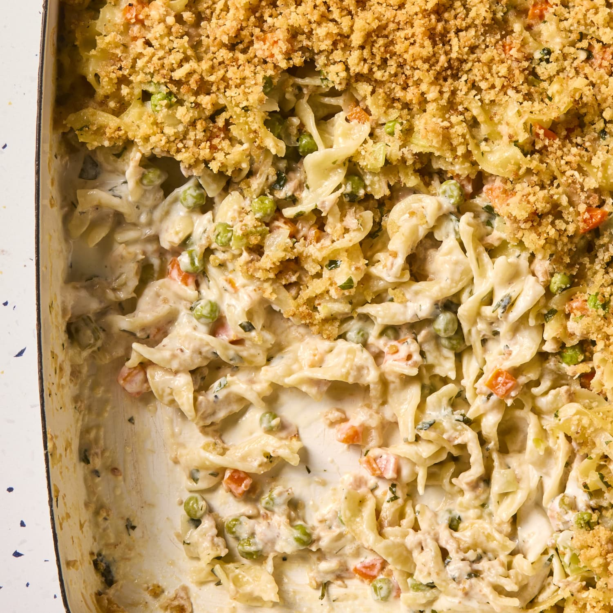

Tuna Casserole

Ingredients
- Cooked macaroni pasta (8-16 oz)
- 1 box of mushrooms, sliced
- 1-2 Tablespoons of butter
- 2 Tablespoons of flour
- 1 cup of milk
- 1⁄2 cup of chicken broth
- 1 can of cream of mushroom soup
- 1 Tablespoon of Buckshot seasoning (or any other seasoning)
- 2+ cans of tuna
- 1 cup of peas
- 1 cup of cheddar cheese
- parmesan
- Panko
Cooking Steps
- Preheat oven to 375°F
- Grease a casserole dish
- In a large pan, simmer mushrooms until tender, then set aside
- In the same pan, add butter and flour. Stir. Whick in milk and broth
- Add cream of mushroom soup and Buckshot
- Which until thickened
- Add in tuna, mushrooms, and peas
- Mix together with cooked pasta and cheese (may need a seperate large bowl)
- Transfer to casserole dish
- In a small bowl, mix parmesan, panko, and more Buckshot with olive oil. Then top casserole with it
- Bake for ~30 minutes
Enjoy!